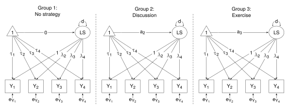

One-Way ANOVA of latent variable
Thompson, M., Lie, Y. & Green, S. (2023). Flexible structural equation modeling approaches for analyzing means. In R. Hoyle (Ed.), Handbook of structural equation modeling (2nd ed., pp. 385-408). New York, NY: Guilford Press.
This example shows the SEM approach to Part 5: One-way ANOVA of a latent variable. Results are reported in Table 21.6 (p. 404).
Any comparison of latent means assumes some level of measurement invariance. The first part of this example demonstrates SEM assuming strict measurement invariance. The second part demonstrates SEM under partial invariance of loadings and intercepts.
The data file (satisfactionII.csv) is in the data folder.
Load package and get the data
library(lavaan)
df <- read.csv("./data/satisfactionII.csv", header = TRUE)
head(df)The variables used in this example are:
- x - Coping Strategy (“a” - no strategy; “b” - discussion; “c” - exercise)
- y1, y2, y3, y4 - multiple dependent variables (life-satisfaction scores)
Structural Equation Modeling
The SEM model for the one-way ANOVA of a latent variable is shown in Fig 21.3 (p. 403), and is reproduced below. The diagram shows the “Less Constrained” model.

For purposes of identification and scaling, the loading for the first indicator is constrained to one. (TLG claim that the loading for the 4th indicator is constrained to one. However, when the 4th loading is constrained to one, I do not get the same results as given in Table 21.6 (in particular the latent variance), nor do I get the means (given in the discussion on p. 405); whereas I get agreement with the Table and the text when I constrain the 1st loading to one.)
Also for the purposes of identification and scaling, the latent mean for the first group is constrained to zero. For the “Less Constrained” model, the latent means for the other groups (a2 and a3) are freely estimated.
TLG assume strict measurement invariance:
- the loadings (\(\uplambda\)) are constrained to equality across the groups;
- the intercepts (\(\uptau\)) are constrained to equality across the groups;
- the indicator residual variances (e) and covariances are constrained to equality (covariances are set to zero by default, and thus they are equal);
- TLG impose one last constraint - latent error variances are constrained to equality across the groups (they do this to obtain a pooled variance to calculate an effect size for the differences between latent means).
The model statements are shown below. The only difference between the “More Constrained” model and the “Less Constrained” model is in the latent means. For purposess of identification and scaling, the latent mean for the first group is constrained to zero; in the “More Constrained” model, in which the means are constrained to equality, all three are constrained to zero. In the “Less Constrained” model, the means in the second and third groups are freely estimated.
The common parts of the two models are set up according to the bullet points above.
# Model statements
common <- "
# Measurement model
F =~ y1 + c(l2,l2,l2)*y2 + c(l3,l3,l3)*y3 + c(l4,l4,l4)*y4
# Indicator intercepts
y1 ~ c(a1,a1,a1)*1
y2 ~ c(a2,a2,a2)*1
y3 ~ c(a3,a3,a3)*1
y4 ~ c(a4,a4,a4)*1
# Indicator residual variances
y1 ~~ c(e1,e1,e1)*y1
y2 ~~ c(e2,e2,e2)*y2
y3 ~~ c(e3,e3,e3)*y3
y4 ~~ c(e4,e4,e4)*y4
# Latent error variances
F ~~ c(d,d,d)*F"
models <- list(
"More Constrained" = c(
"# Latent means
F ~ c(m,m,m)*1
# Constraint
m == 0",
common),
"Less Constrained" = c(
"# Latent means
F ~ c(m1,m2,m3)*1
# Constraint
m1 == 0",
common)
)Fit the models and get the results
fit <- lapply(models, sem, data = df, group = "x")
# Get model summaries
lapply(fit, summary)
# Contrast model fits
Reduce(anova, fit)Compare with \(\upchi\)2 test in the “All measures” row in Table 21.6.
One could scroll through the model summaries to find the latent means and error variances for the “Less Constrained” model, and compare them with Table 21.6. They are also needed to calculate effect sizes (given in the first column on p. 405).
d1 <- (0.664 - 0) / sqrt(8.135); d1 # "no strategy" vs "discussion"
d2 <- (1.945 - 0) / sqrt(8.135); d2 # "no strategy" vs "exercise"But it is probably safer to extract latent means and error variances from a list of parameter estimates.
estimates <- lavInspect(fit[["Less Constrained"]], "est"); estimates
# Note: latent means are in element "alpha"
# latent error variances are in element "psi"
LatentMeans <- do.call(rbind, lapply(estimates, "[[", "alpha")); LatentMeans
LatentVar <- do.call(rbind, lapply(estimates, '[[', 'psi')); LatentVar
d1 <- (LatentMeans[2] - LatentMeans[1]) / sqrt(LatentVar[1]); d1 # "no strategy" vs "discussion"
d2 <- (LatentMeans[3] - LatentMeans[1]) / sqrt(LatentVar[1]); d2 # "no strategy" vs "exercise"Compare the effect sizes with those given on p. 405, and the means and error variances with those in Table 21.6.
More Flexible Tests of Differences in Means on Latent Variables
The second and third rows of Table 21.6 follow after a discussion in the section headed “More Flexible Tests of Differences in Means on Latent Variables” (pp. 406-407).
In this sectin, TLG assume partial strong invariance:
- Constrain one loading for one indicator to equality across groups
- Constrain that indicator’s intercept to equality across groups
- The other loadings and intercepts are freely estimated
For purposes of identification:
- First loading in each group is constrained to one
- Latent mean in the first group is constrained to zero
Note that the residual variances are freely estimated across groups, as are the latent error variances. The indicator covariances are by default set to zero (unless there is good reason to have one or more estimated).
For the “More Constrained” model, the latent means are constrained to equality across the groups; for the “Less Constrained” model, the latent means differ.
The purpose of these examples is to demonstrate that “if a latent variable has only a single referent variable, the means and variances of the latent variable are a function of only the means and variances of this variable” (p. 406).
Model that applies to the 2nd row in Table 21.6: “One measure - Y\(_\mathsf{1}\)”
The selected indicator is the first - “y1”.
# Model statements
common <- "
# Measurement model
F =~ y1 + c(l12,l22,l32)*y2 + c(l13,l23,l33)*y3 + c(l14,l24,l34)*y4
# Indicator intercepts
y1 ~ c(a1,a1,a1)*1
y2 ~ c(a12,a22,a32)*1
y3 ~ c(a13,a23,a33)*1
y4 ~ c(a14,a24,a34)*1
# Indicator residual variances
y1 ~~ c(e11,e21,e31)*y1
y2 ~~ c(e12,e22,e32)*y2
y3 ~~ c(e13,e23,e33)*y3
y4 ~~ c(e14,e24,e34)*y4
# Latent error variances
F ~~ c(d1,d2,d3)*F"
models <- list(
"More Constrained" = c(
"# Latent means
F ~ c(m,m,m)*1
# Constraint
m == 0",
common),
"Less Constrained" = c(
"# Latent means
F ~ c(m1,m2,m3)*1
# Constraint
m1 == 0",
common)
)Fit the models and get the latent means, latent error variances, and the \(\upchi\)2 test.
fit <- lapply(models, sem, data = df, group = "x")
# Model summaries
lapply(fit, summary)
# Get the latent means and latent error variances for "Less Constrained" model
estimates <- lavInspect(fit[["Less Constrained"]], "est"); estimates
LatentMeans <- do.call(rbind, lapply(estimates, "[[", "alpha")); LatentMeans
LatentVar <- do.call(rbind, lapply(estimates, '[[', 'psi')); LatentVar
# Contrast model fits
Reduce(anova, fit)Compare with the latent means and error variances, and the \(\upchi\)2 test in the 2nd row in Table 21.6.
Consider the three columns of Table 21.6 dealing with means, variances and residual variances of one measure - in this case, “y1”.
I need sample means and covariances - they can be extract from a list of sample statistics. I need estimated indicator intercepts and residual variances - they can be extracted from estimates. Also I need estimated latent means and error variances - they have already been extracted.
# Sample statistics
sampstat <- lavInspect(fit[["Less Constrained"]], "sampstat"); sampstat
# Means are in element "mean"
# Variances are the diagonal elements in element "cov"
# Estimated model parameters
estimates
# Residual variances for the measures are the diagonal elements in element "theta"
# Intercepts for the measures are in element "nu"Means of the measures for each group (ie, the “y1” means).
- Extract the “y1” means from
sampstats - Latent means already extracted in
LatentMeans - The differences between the “y1” means are the differences between the latent means
- Alternatively, the “y1” intercepts (which are constrained to equality) when added to the latent means give the “y1” means
# Extract y1 Means from sampstats
MeansY1 <- do.call(cbind, lapply(sampstat, "[[", "mean"))
MeansY1 <- MeansY1[1,]; MeansY1 # Compare with 2nd row in Table 21.6
# Differences between y1 means
MeansY1[2] - MeansY1[1]
MeansY1[3] - MeansY1[1]
# Compare with latent means
LatentMeans
# Alternatively, the y1 intercepts (which are constrained to equality)
# added to the latent means give the y1 Means
intercepts <- do.call(cbind, lapply(estimates, "[[", "nu"))[1,1]; intercepts
intercepts + LatentMeans; MeansY1Variances of the measure for each group (ie, “y1” variances)
- Extract the “y1” variances from
sampstats - Extract residual variances for “y1” from
estimates - Latent error variances already extracted in
LatentVar - Differences between “y1” variances and “y1” residual variances are the latent error variances
# Extract y1 variances from sampstats
VarY1 <- do.call(cbind, lapply(lapply(sampstat, "[[", "cov"), diag))
VarY1 <- VarY1[1,]; VarY1 # Compare with 2nd row in Table 21.6
# Extract residual variances for y1 from estimates
ResidVarY1 <- lapply(lapply(estimates, '[[', 'theta'), diag)
ResidVarY1 <- do.call(rbind, lapply(ResidVarY1, '[', 1)); ResidVarY1 # Compare with 2nd row in Table 21.6
# Differences between y1 variances and y1 residual variances
VarY1 - ResidVarY1
# Compare with the latent error variances
LatentVarModel that applies to the 3rd row in Table 21.6: “One measure - Y\(_\mathsf{2}\)”
The selected indicator is the second - “y2”.
The is the same as before, except the constraints on the loadings and intercepts apply to the second indicator.
# Model statements
common <- "
# Measurement model
F =~ NA*c(l11,l21,l31)*y1 + 1*y2 + c(l13,l23,l33)*y3 + c(l14,l24,l34)*y4
# Indicator intercepts
y1 ~ c(a11,a21,a31)*1
y2 ~ c(a2,a2,a2)*1
y3 ~ c(a13,a23,a33)*1
y4 ~ c(a14,a24,a34)*1
# Indicator residual variances
y1 ~~ c(e11,e21,e31)*y1
y2 ~~ c(e12,e22,e32)*y2
y3 ~~ c(e13,e23,e33)*y3
y4 ~~ c(e14,e24,e34)*y4
# Latent error variances
F ~~ c(d1,d2,d3)*F"
models <- list(
"Less Constrained" = c(
"# Latent means
F ~ c(m1,m2,m3)*1
# Constraint
m1 == 0",
common),
"More Constrained" = c(
"# Latent means
F ~ c(m,m,m)*1
# Constraint
m == 0",
common)
)Fit the models and get the latent means, latent error variances, and the \(\upchi\)2 test.
fit <- lapply(models, sem, data = df, group = "x")
# Model summaries
lapply(fit, summary)
# Get the latent means and latent error variances for "Less Constrained" model
estimates <- lavInspect(fit[["Less Constrained"]], "est"); estimates
LatentMeans <- do.call(rbind, lapply(estimates, "[[", "alpha")); LatentMeans
LatentVar <- do.call(rbind, lapply(estimates, '[[', 'psi')); LatentVar
# Contrast model fits
Reduce(anova, fit)Compare with the latent means and error variances, and the \(\upchi\)2 test in the 3rd row in Table 21.6.
Consider the three columns of Table 21.6 dealing with means, variances and residual variances of one measure - in this case, “y2”.
I need sample means and covariances - they can be extract them from a list of sample statistics. I need estimated indicator intercepts and residual variances - they can be extracted from estimates. Also I need estimated latent means and error variances - they have already been extracted.
# Sample statistics
sampstat <- lavInspect(fit[["Less Constrained"]], "sampstat"); sampstat
# Means are in element "mean"
# Variances are the diagonal elements in element "cov"
# Estimated model parameters
estimates
# Residual variances for the measures are the diagonal elements in element "theta"
# Intercepts for the measures are in element "nu"The means of the measures for each group (ie, the “y2” means).
- Extract the “y2” means from
sampstats - Latent means already extracted in
LatentMeans - The differences between the “y2” means are the differences between the latent means
- Alternatively, the “y2” intercepts (which are constrained to equality) when added to the latent means give the “y2” means
# Extract y2 Means from sampstats
MeansY2 <- do.call(cbind, lapply(sampstat, "[[", "mean"))
MeansY2 <- MeansY2[2,]; MeansY2 # Compare with 3rd row in Table 21.6
# Differences between y2 means
MeansY2[2] - MeansY2[1]
MeansY2[3] - MeansY2[1]
# Compare with latent means
LatentMeans
# Alternatively, the y2 intercepts (which are constrained to equality)
# added to the latent means give the Y2 Means
intercepts <- do.call(cbind, lapply(estimates, "[[", "nu"))[2,1]; intercepts
intercepts + LatentMeans; MeansY2The variances of the measure for each group (ie, “y2” variances)
- Extract the “y2” variances from
sampstats - Extract residual variances for “y2” from
estimates - Latent error variances already extracted in
LatentVar - Differences between “y2” variances and “y2” residual variances are the latent error variances
# Extract y2 variances from sampstats
VarY2 <- do.call(cbind, lapply(lapply(sampstat, "[[", "cov"), diag))
VarY2 <- VarY2[2,]; VarY2 # Compare with 3rd row in Table 21.6
# Extract residual variances for y2 from estimates
ResidVarY2 <- lapply(lapply(estimates, '[[', 'theta'), diag)
ResidVarY2 <- do.call(rbind, lapply(ResidVarY2, '[', 2)); ResidVarY2 # Compare with 3rd row in Table 21.6
# Differences between y2 variances and y2 residual variances
VarY2 - ResidVarY2
# Compare with the latent error variances
LatentVarThe R script with minimal commenting is available in 05_one_way_LATENT.r.